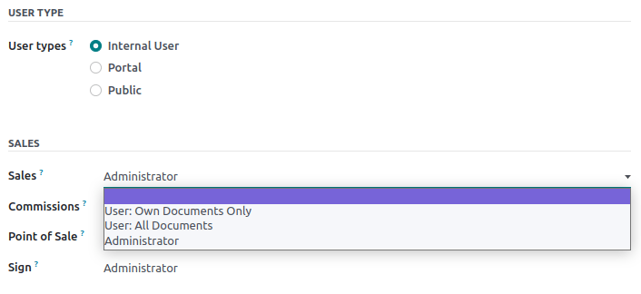
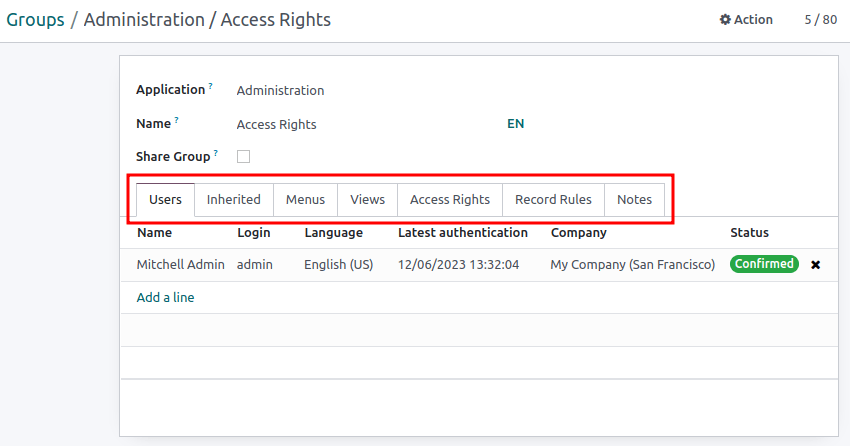

Permisos de acceso¶
Los permisos de acceso son permisos que determinan el contenido y las aplicaciones a las que los usuarios pueden acceder y editar. En Odoo, estos permisos se pueden configurar para usuarios individuales o para grupos de usuarios. Limitar los permisos a solo aquellos usuarios que los necesitan asegura que los usuarios no modificarán ni eliminarán nada a lo que no tengan acceso.
Solo los administradores pueden cambiar los permisos de acceso.
Peligro
Los cambios a los permisos de acceso pueden afectar de forma perjudicial la base de datos. Esto incluye admin impotente, lo que significa que ningún usuario en la base de datos podrá cambiar los permisos de acceso. Le recomendamos que se ponga en contacto con un consultor de Odoo o con nuestro equipo de soporte antes de realizar cambios.
Truco
Un usuario debe tener permisos de acceso específicos de Administración configurados en su perfil de usuario para poder hacer cambios en los ajustes de otro usuario para derechos de acceso.
Para acceder a este función, vaya a .
Una vez en este ajuste, un administrador existente debe cambiar el ajuste en el campo Administración a Derechos de acceso
Una vez que termine, haga clic en Guardar para guardar los cambios e implementar al usuario como administrador.
Usuarios¶
Los derechos de acceso para usuarios individuales se configuran cuando el usuario se agrega a la base de datos, pero se pueden ajustar en cualquier momento en el perfil del usuario.
Para hacer cambios en los permisos de acceso del usuario, haga clic en el usuario deseado para editar su perfil.
En la página de perfil del usuario, en la pestaña Permisos de acceso deslícese hacia abajo para ver los permisos actuales.
Para cada aplicación, use el menú desplegable para seleccionar qué nivel de permisos debería de tener un usuario. Las opciones varían por cada sección, pero las más comunes son: Vacío o ninguno, Usuario: solo mostrar documentos propios, Usuario: todos los documentos, o Administrador.
El campo Administración en la pestaña Permisos de acceso tiene las siguientes opciones: Ajustes o Permisos de acceso.
Crear y modificar grupos¶
Grupos son permisos específicos que se usan para gestionar los permisos de acceso comunes para una gran cantidad de usuarios. Los administradores pueden modificar los grupos existentes en Odoo, o crear nuevos para definir las reglas para modelos dentro de una aplicación.
Para acceder a grupos, primero active el modo de desarrollador de Odoo, después valla a .

Para crear un nuevo grupo, haga clic en Crear en la página Grupos. Después, en el formulario en blanco de grupo, seleccione una Aplicación y complete el formulario del grupo (como se detalla más adelante).
Para modificar grupos existentes, haga clic en un grupo existente de la lista que se muestra en la página Grupos y edite los contenidos del formulario.
Ingrese un Nombre para el grupo y marque la casilla de verificación a un lado de Compartir grupo, si este grupo se creó para configurar permisos de acceso para compartir datos con otros usuarios.
Importante
Siempre pruebe los ajustes que se están cambiando para asegurarse de que se están aplicando a los usuarios correctos.
El formulario de grupo contiene varias pestañas para gestionar todos los elementos del grupo. En cada pestaña, haga clic en Agregar una línea para agregar una nueva hilera para usuarios o reglas y haga clic en el icono ❌ (eliminar) para eliminar una hilera.
La pestaña Usuarios: enlista los usuarios que actualmente están en el grupo. Los usuarios que aparezcan en negro son aquellos que tienen permisos de administrador, mientras que los usuarios sin permisos de administrador aparecerán en azul. Haga clic en Agregar una línea para agregar usuarios a este grupo.
La pestaña heredado: heredado significa que los usuarios que se agreguen a este grupo se agregan también de forma automática a los grupos que se enlistan en esta pestaña. Haga clic en Agregar una línea para agregar grupos heredados.
Example
Por ejemplo, si el grupo Ventas/Administrador tiene al grupo Sitio web/Editor restringido en su pestaña Heredado, entonces cualquier usuario que se agregue al grupo Ventas/Administrador también recibirá acceso al grupo Sitio web/Editor restringido en automático.
La pestaña Menús: define a qué menús o modelos puede acceder el grupo. Haga clic en Agregar una línea para agregar un menú en específico.
La pestaña Vistas: define a qué vistas en Odoo puede acceder el grupo. Haga clic en Agregar una línea para agregar una vista al grupo.
La pestaña Permisos de acceso: enlista el primer nivel de permisos (modelos) a los que este grupo tiene permisos de acceso. Haga clic en Agregar una línea para vincular permisos de acceso a este grupo. En esta pestaña la columna Modelo representa el nombre común del menú o modelo y la columna Nombre representa el nombre técnico que se le da a dicho modelo. Para cada modelo, active las siguientes opciones como lo crea necesario:
Lectura: los usuarios pueden ver los valores existentes del objeto.
Editar: los usuarios pueden editar los valores existentes del objeto.
Crear: los usuarios pueden crear nuevos valores para el objeto.
Eliminar: los usuarios pueden borrar borrar los valores para el objeto.
Truco
Primero intente buscar el nombre común del modelo en el menú desplegable de la columna Modelo. El nombre técnico del Modelo puede encontrarse al expandir el nombre común del modelo, lo cual se hace al hacer clic en el icono (enlace externo).
También puede acceder al nombre técnico del modelo en modo de desarrollador.
En un formulario, vaya a cualquier campo y pase el cursor por encima del nombre del campo. Al hacer esto, aparecerá una caja con información de backend con el nombre específico del Objeto en el backend. Este es el nombre técnico del modelo que se debe agregar.

Reglas de registro: enlista la segunda capa de edición y permisos de visualización. Las reglas de registro sobreescriben, o hacen más precisos, los permisos de acceso del grupo. Haga clic en Agregar una línea para agregar una regla de registro a este grupo. Por cada regla, seleccione los valores para las siguientes opciones:
Postúlate para lectura.
Aplicar para edición.
Aplicar para crear.
Aplicar para borrar.
Importante
Las reglas de registro se escriben usando un dominio o condiciones que filtran la información. Una expresión de dominio es una lista de estas condiciones, por ejemplo:
[('mrp_production_ids', 'in', user.partner_id.commercial_partner_id.production_ids.ids)]Esta regla de registro existe ara activar las advertencias de consumo de MRP para subcontratistas.
Odoo tiene una librería de reglas de registro preconfiguradas para facilitar el uso. Los usuarios que no sepan de dominos (o expresiones de dominos) deben ponerse en contacto con un consultor de Odoo o con el equipo de soporte de Odoo antes de hacer estos cambios.
Modo de superusuario¶
El modo de superusuario permite que el usuario omita las reglas de registro y los permisos de acceso. Para activar el modo de superusuario primero debe activar el modo de desarrollador. Después, navegue al menú de depuración, el cual se representa con el icono 🪲 (bug), que se ubica en la parte superior.
Finalmente, en la parte inferior del menú, haga clic en Convertirse en superusuario.
Importante
Solo los usuarios que tengan el permiso de acceso Ajustes en la sección Administración de los Permisos de acceso (en su perfil de usuario) tienen permitido ingresar al modo de superusuario.
Peligro
El modo de superusuario permite saltarse las reglas de registro y los derechos de acceso, por lo que debe usarse con mucha precaución.
Es probable que al salir del modo de superusuario los usuarios no puedan ingresar a la base de datos debido a los cambios realizados. Esto puede causar un admin impotente, o un admin que no puede cambiar los permisos de acceso o los ajustes.
En este caso, se debe poner en contacto con el soporte de Odoo mediante un nuevo ticket de ayuda. El equipo de soporte puede restaurar el acceso con un inicio de sesión de soporte.
Para salir del modo de superusuario cierre a sesión de la cuenta haciendo clic en el nombre de usuario OdooBot que se encuentra en la esquina superior derecha. Después, seleccione la opción Cerrar sesión.
Truco
Otra forma de activar el modo superusuario es iniciar sesión como un superusuario. Para hacerlo, vaya a la pantalla de inicio de sesión e ingrese el correo electrónicol y la contraseña adecuados.
En lugar de hacer clic en iniciar sesión, haga clic en iniciar sesión como superusuario.